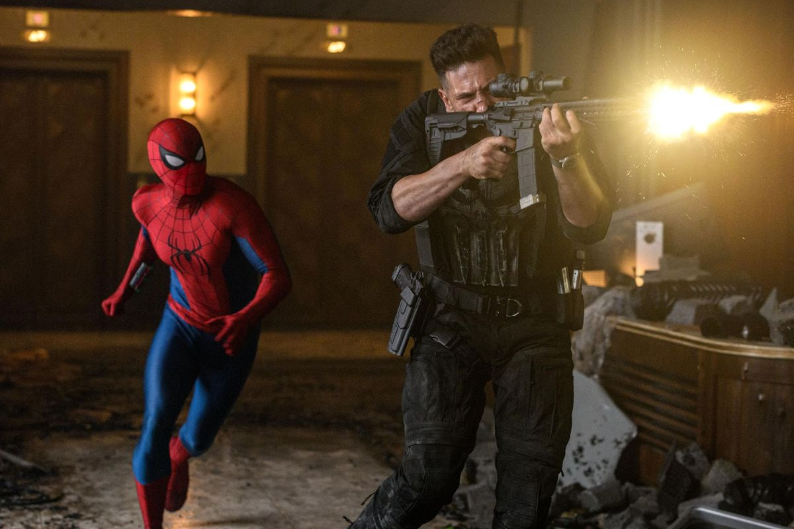

Spider-Man: Brand New Day takes place four years after the events of Spider-Man: No Way Home. Peter Parker is living completely on his own after Doctor Strange's spell erased everyone's memories of him. He has dedicated himself to being Spider-Man full-time, protecting New York while struggling with the loneliness of having lost MJ, Ned, and the rest of his old life. Peter also begins experiencing strange changes in his body and abilities as his spider DNA becomes more powerful. While investigating a series of attacks connected to the Department of Damage Control, he discovers that someone with powerful telepathic abilities is controlling people's minds. Peter eventually learns that the person behind the attacks is Jean Grey, a young mutant searching for information about her sister, Sara. Jean's sister was captured by Damage Control and subjected to experiments involving her mutant abilities. The experiments eventually killed Sara, while Bill Metzger, the man responsible for the program, covered up what happened. Jean believes that something called "V-Max" is connected to her sister's death and becomes determined to find the truth. As Peter tries to stop Jean, she becomes increasingly powerful and even takes control of Bruce Banner and Frank Castle, the Punisher. Jean uses Hulk to fight Spider-Man, but Bruce manages to break free from her control before losing control of himself and becoming the more aggressive Savage Hulk. Peter eventually manages to calm Bruce down. Peter later discovers the truth about Jean and realizes that she isn't simply trying to hurt people—she is searching for answers about her sister. At Damage Control's facility, Jean unleashes her powers across the city, freezing thousands of people in place. Instead of fighting her, Peter allows Jean into his mind and shows her a memory of Aunt May. He helps Jean understand that she doesn't have to become the monster that others fear her to be. Before Jean can kill Metzger, the Punisher shoots at her. Peter jumps in front of the bullet and is seriously wounded. Jean uses her telepathic abilities to keep Peter alive while he is taken to the hospital. Frank stays with Peter, and eventually disguises himself as Spider-Man so the people outside the hospital will know that Spider-Man survived. Jean leaves New York, while Damage Control comes under investigation and Metzger escapes. Bruce Banner is taken away after his transformation into the Savage Hulk. Peter also finally tells MJ the truth about their past. MJ reads the letter Peter wrote before Doctor Strange's spell and learns that they were once together, but she still doesn't remember their relationship or have romantic feelings for him. The movie ends with Peter approaching Ned and introducing himself as Peter. When they shake hands, Ned instinctively completes the secret handshake they used to share. Ned then looks at Peter and says his name, suggesting that some of his memories of Peter may be returning. Peter's story ends on a more hopeful note. He is still Spider-Man, but he no longer has to completely isolate himself from the people he cares about.
